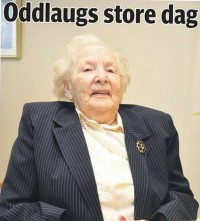

Lise Marie Markusdatter Riise
K, #80576, f. 14 mars 1882, d. 6 november 1961
Biografi
Lise Marie Markusdatter Riise ble født den 14 mars 1882 Buksnes, Vestvågøy, Nordland. Hun giftet seg med
Martin Dreyer Solberg den 26 desember 1907 på/i Bjørnskinn kirke, Andøy, Nordland. Hun døde den 6 november 1961. Hun ble gravlagt den 11 november 1961 på/i Bjørnskinn kirkegård, Andøy, Nordland.
Lise Marie Markusdatter Riise was also known as Lise Marie Solberg.
| Sist redigert |
19 januar 2016 00:00:00 |
Egil Mareno Solberg
M, #80577, f. 11 juni 1908, d. 24 juli 1987
Foreldre
Biografi
Egil Mareno Solberg ble født den 11 juni 1908 Bjørnskinn; Dverberg, Andøy, Nordland. Han døde den 24 juli 1987. Han ble gravlagt den 1 august 1987 på/i Bjørnskinn kirkegård, Andøy, Nordland.
Egil Mareno Solberg ble døpt den 13 september 1908 på/i Bjørnskinn kirke, Andøy, Nordland.
| Sist redigert |
19 januar 2016 00:00:00 |
| Slektskap | 7-menning 1 gang forskjøvet til Håkon Wahl |
Astrid Matilde Solberg
K, #80578, f. 13 oktober 1909, d. 30 oktober 1965
Foreldre
Biografi
Astrid Matilde Solberg ble født den 13 oktober 1909 Bjørnskinn; Dverberg, Andøy, Nordland. Hun giftet seg med
Erling Arnold Strand. Hun døde den 30 oktober 1965. Hun ble gravlagt den 6 november 1965 på/i Bjørnskinn kirkegård, Andøy, Nordland.
Astrid Matilde Solberg was also known as Astrid Matilde Strand. Hun ble døpt den 24 mars 1910 på/i Bjørnskinn kirke, Andøy, Nordland.
| Sist redigert |
19 januar 2016 00:00:00 |
| Slektskap | 7-menning 1 gang forskjøvet til Håkon Wahl |
Borghild Othilie Solberg
K, #80579, f. 29 juli 1911, d. 26 november 1991
Foreldre
Biografi
Borghild Othilie Solberg ble født den 29 juli 1911 Bjørnskinn; Dverberg, Andøy, Nordland. Hun giftet seg med
Halvdan Schjelderup Hansen den 1 mars 1936 på/i Bjørnskinn; Dverberg, Andøy, Nordland. Hun døde den 26 november 1991 på/i Hadsel, Nordland.
Borghild Othilie Solberg ble døpt den 27 august 1911 på/i Bjørnskinn kirke, Andøy, Nordland. Hun ble konfirmert den 13 juni 1926 på/i Bjørnskinn; Dverberg, Andøy, Nordland. Hun bodde i 1991 på/i Andøy, Nordland.
| Sist redigert |
15 juni 2025 21:32:52 |
| Slektskap | 7-menning 1 gang forskjøvet til Håkon Wahl |
Oddlaug Emilie Solberg
K, #80580, f. 6 august 1914, d. 30 august 2016
Foreldre
Familie: Rasmus Kleppe (f. 13 januar 1918, d. 20 mai 2006)
| Sønn | Tore Kleppe |
| Datter | Årrid Solberg Kleppe |

Oddlaug Emilie Kleppe
Biografi
Oddlaug Emilie Solberg ble født den 6 august 1914 Bjørnskinn; Dverberg, Andøy, Nordland. Hun giftet seg med
Rasmus Kleppe. Hun døde den 30 august 2016 på/i Andøya bo- og behandlingssenter, Anddøy, Nordland. Hun ble gravlagt den 7 september 2016 på/i Bjørnskinn kirkegård, Andøy, Nordland.
Oddlaug Emilie Solberg was also known as Oddlaug Emilie Kleppe. Hun ble døpt den 1 januar 1915 på/i Bjørnskinn kirke, Andøy, Nordland.
| Sist redigert |
11 august 2025 23:49:07 |
| Slektskap | 7-menning 1 gang forskjøvet til Håkon Wahl |
Mathilde Lovise Solberg
K, #80581, f. 29 juni 1918, d. 7 juni 2007
Foreldre
Biografi
Mathilde Lovise Solberg ble født den 29 juni 1918 Bjørnskinn; Dverberg, Andøy, Nordland. Hun giftet seg med
Jakob Marinius Dahl. Hun døde den 7 juni 2007 på/i Andøy, Nordland. Hun ble gravlagt den 14 juni 2007 på/i Bjørnskinn kirkegård, Andøy, Nordland.
Mathilde Lovise Solberg was also known as Mathilde Lovise Solberg Dahl. Hun ble døpt den 27 oktober 1918 på/i Bjørnskinn kirke, Andøy, Nordland.
| Sist redigert |
19 januar 2016 00:00:00 |
| Slektskap | 7-menning 1 gang forskjøvet til Håkon Wahl |
Erling Arnold Strand
M, #80582, f. 26 oktober 1904, d. 28 februar 1977
Biografi
Erling Arnold Strand ble født den 26 oktober 1904 Åse, Andøy, Nordland. Han giftet seg med
Astrid Matilde Solberg. Han døde den 28 februar 1977. Han ble gravlagt den 5 mars 1977 på/i Bjørnskinn kirkegård, Andøy, Nordland.
| Sist redigert |
19 januar 2016 00:00:00 |
Ole Martin Strand
M, #80583, f. 29 mars 1943, d. 6 desember 2003
Foreldre
Biografi
Ole Martin Strand ble født den 29 mars 1943 Risøya, Andøy, Nordland. Han giftet seg med
Åse Karin Fagervik. Han døde den 6 desember 2003 på/i Stavanger, Rogaland. Han ble gravlagt den 18 desember 2003 på/i Eiganes kirkegård, Stavanger, Rogaland.
| Sist redigert |
19 januar 2016 00:00:00 |
| Slektskap | 8-menning til Håkon Wahl |
Åse Karin Fagervik
K, #80584, f. 16 juni 1944, d. 28 september 1993
Biografi
Åse Karin Fagervik ble født den 16 juni 1944. Hun giftet seg med
Ole Martin Strand. Hun døde den 28 september 1993 på/i Stavanger, Rogaland. Hun ble gravlagt den 5 oktober 1993 på/i Eiganes kirkegård, Stavanger, Rogaland.
Åse Karin Fagervik was also known as Åse Karin Strand.
| Sist redigert |
19 januar 2016 00:00:00 |
Brita Strand
K, #80587, f. 16 januar 1939, d. 23 juli 1979
Foreldre
Biografi
Brita Strand ble født den 16 januar 1939 Risøya, Andøy, Nordland. Hun døde den 23 juli 1979 på/i Stavanger, Rogaland. Hun ble gravlagt den 27 juli 1979 på/i Eiganes kirkegård, Stavanger, Rogaland.
Brita Strand was also known as Brita Karlsen.
| Sist redigert |
19 januar 2016 00:00:00 |
| Slektskap | 8-menning til Håkon Wahl |
Rasmus Kleppe
M, #80588, f. 13 januar 1918, d. 20 mai 2006
Familie: Oddlaug Emilie Solberg (f. 6 august 1914, d. 30 august 2016)
| Sønn | Tore Kleppe |
| Datter | Årrid Solberg Kleppe |
Biografi
Rasmus Kleppe ble født den 13 januar 1918 Bjørnskinn; Dverberg, Andøy, Nordland. Han giftet seg med
Oddlaug Emilie Solberg. Han døde den 20 mai 2006 på/i Bjørnskinn; Dverberg, Andøy, Nordland. Han ble gravlagt den 26 mai 2006 på/i Bjørnskinn kirkegård, Andøy, Nordland.
| Sist redigert |
19 januar 2016 00:00:00 |
Jakob Marinius Dahl
M, #80589, f. 10 oktober 1920, d. 13 mai 1974
Biografi
Jakob Marinius Dahl ble født den 10 oktober 1920. Han giftet seg med
Mathilde Lovise Solberg. Han døde den 13 mai 1974 på/i Andøy, Nordland. Han ble gravlagt den 18 mai 1974 på/i Bjørnskinn kirkegård, Andøy, Nordland.
| Sist redigert |
19 januar 2016 00:00:00 |
Oberg Schjeldrup Solberg
M, #80590, f. 18 august 1887, d. 24 januar 1978
Foreldre
Biografi
Oberg Schjeldrup Solberg ble døpt den 30 oktober 1887 på/i Bjørnskinn kirke, Andøy, Nordland. Han ble konfirmert i 1902. Han var utdannet ved folkehøyskole og handelsskole. Han. var disponent, og bosatt i Harstad i 1919. Han. var medlem av Lavangen herredsstyre 1909-1915, Hammerfest bystyre 1944-1952, hvorav fire år som medlem i formannskapet, medlem av Hammerfest Havnestyre, styremedlem av Hammerfest Bunkerdepot A/S fra starten, ordfører i representantskapet for for A/S Finnmarkens Privatbank siden 1940 og styremedlem i Norges Handelstands Forbund 1938-1945.
| Sist redigert |
16 august 2025 23:28:32 |
| Slektskap | 6-menning 2 ganger forskjøvet til Håkon Wahl |
Konstanse Agnete Korneliusdatter Johansen
K, #80591, f. 5 mai 1889, d. 11 september 1974
Biografi
Konstanse Agnete Korneliusdatter Johansen ble født den 5 mai 1889 Røkenes, Lavangen, Troms. Hun giftet seg med
Oberg Schjeldrup Solberg den 12 november 1910 på/i Lavangen, Troms.
Oberg Schjeldrup Solberg og hun ble skilt. Hun døde den 11 september 1974 på/i Lavangen, Troms. Hun ble gravlagt på/i Lavangen kirkegård, Lavangen, Troms.
Konstanse Agnete Korneliusdatter Johansen was also known as Konstanse Agnete Solberg.
| Sist redigert |
19 januar 2016 00:00:00 |
Oddlaug Solberg
K, #80592, f. 11 november 1912, d. 10 juli 1995
Foreldre
Biografi
Oddlaug Solberg ble født den 11 november 1912 Tennevoll, Lavangen, Troms. Hun giftet seg med
Albin Johan Lyngmo den 2 januar 1934 på/i Nidarosdomen, Trondheim, Sør-Trøndelag. Hun døde den 10 juli 1995 på/i Lavangen, Troms. Hun ble gravlagt på/i Lavangen kirkegård, Lavangen, Troms.
Oddlaug Solberg was also known as Oddlaug Solberg Lyngmo. Hun ble døpt den 13 juli 1913 på/i Lavangen, Troms.
| Sist redigert |
19 januar 2016 00:00:00 |
| Slektskap | 7-menning 1 gang forskjøvet til Håkon Wahl |
Asbjørg Solberg
K, #80593, f. 1 januar 1915, d. 14 november 2012
Foreldre
Biografi
Asbjørg Solberg ble født den 1 januar 1915 Lavangen, Troms. Hun døde den 14 november 2012 på/i Lavangen, Troms. Hun ble gravlagt den 22 november 2012 på/i Lavangen kirkegård, Lavangen, Troms.
Asbjørg Solberg was also known as Asbjørg Halvorsen. Hun ble døpt den 8 august 1915 på/i Lavangen, Troms.
| Sist redigert |
16 august 2025 18:18:10 |
| Slektskap | 7-menning 1 gang forskjøvet til Håkon Wahl |
Margareth Katarine Solberg
K, #80594, f. 16 mai 1919, d. 12 juli 2010
Foreldre
Biografi
Margareth Katarine Solberg ble født den 16 mai 1919 Tennevoll, Lavangen, Troms. Hun døde den 12 juli 2010 på/i Balestrand, Sogn og Fjordane. Hun ble gravlagt på/i Fjærland gravsted, Balestrand, Sogn og Fjordane.
Margareth Katarine Solberg ble døpt den 31 august 1919 på/i Lavangen, Troms.
| Sist redigert |
16 august 2025 18:24:23 |
| Slektskap | 7-menning 1 gang forskjøvet til Håkon Wahl |
Albin Johan Lyngmo
M, #80595, f. 10 august 1907, d. 21 november 1977
Biografi
Albin Johan Lyngmo ble født den 10 august 1907 Lavangen, Troms. Han giftet seg med
Oddlaug Solberg den 2 januar 1934 på/i Nidarosdomen, Trondheim, Sør-Trøndelag. Han døde den 21 november 1977 på/i Lavangen, Troms. Han ble gravlagt på/i Lavangen kirkegård, Lavangen, Troms.
| Sist redigert |
19 januar 2016 00:00:00 |
Sivert Petersen
M, #80596, f. før 1836
Biografi
Sivert Petersen ble født før 1836.
| Sist redigert |
20 januar 2016 00:00:00 |
Elida Alberta Simonsen
K, #80597, f. 10 september 1887, d. 7 mars 1955
Foreldre
Biografi
Elida Alberta Simonsen ble født den 10 september 1887 Aa, Lavangen, Troms. Hun giftet seg med
Oberg Schjeldrup Solberg den 25 januar 1930 på/i Hammerfest, Finnmark. Hun døde den 7 mars 1955 på/i Hammerfest, Finnmark. Hun ble gravlagt på/i Hauen gravsted, Hammerfest, Finnmark.
Elida Alberta Simonsen was also known as Elida Alberta Solberg. Hun ble døpt den 18 oktober 1888 på/i Lavangen, Troms. Hun ble konfirmert den 5 juli 1903 på/i Lavangen, Troms.
| Sist redigert |
16 august 2025 23:34:44 |
Simeon Benoni Ediassen
M, #80598, f. 9 februar 1857, d. 4 april 1935
Biografi
Simeon Benoni Ediassen ble født den 9 februar 1857 Lavangen, Troms. Han giftet seg med
Johanna Margrethe Berteusdatter den 14 august 1882 på/i Ibestad, Troms. Han døde den 4 april 1935 på/i Lavangen, Troms.
Simeon Benoni Ediassen was also known as Simon Benoni Borch.
| Sist redigert |
16 august 2025 23:44:48 |
{kind=link}